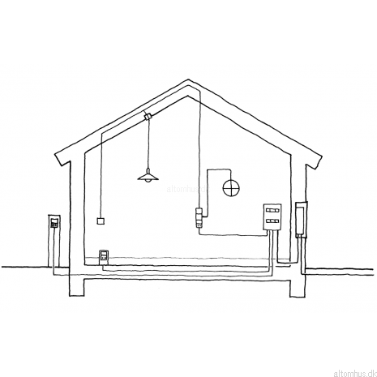

Startside
Lavet af Gruppe 3
Beskrivelse
Billeder
VORES BESKRIVELSE
A. Husets opbygning – beskrivelse af husets konstruktioner, som fundament, vægge, vinduer, døre og tagkonstruktion.
Fundamentet til huset er gravet 90 centimeter ned i jorden. Huset er 170m^2, det vil sige at det er 10x17 m. Murene er lavet af mursten og det er “RT 417 mocca” mursten som man kan købe inde på randerstegl.dk. Væggene er lavet i gasbeton, gasbeton finder man blandt andet i XL eller andre byggemarkeder. Døre og vinduer finder man på “vinduesgrossisten.dk”.
B. Husets VVS-installationer – eksempelvis gulvvarme/radiator og føringsveje rundt i huset til vand, afløb osv.
I huset har vi gulvvarme og selvfølgelig også kloakker, kloakkerne har i at kostet 5000 kr. vi har valgt at få installeret solceller på vores hus, og det vil koste cirka 200.000 kr.
C. Husets el-installationer – føringsveje rundt i bygningen, stikkontakter, spots, lamper osv.
Kablerne kører igennem loftet og væggene, de går vandret og lodret. Husets netkabler kører også igennem væggene og går ind i kontoret og værelserne. 
D. Husets indvendige overflader – herunder gulv, loft og vægoverflader.
Rundt omkring i huset bliver der lagt trægulv undtagen på badeværelserne hvor der vil blive lagt fliser. På væggene kommer der til at være hvid maling og på badeværelset kommer der til at være fliser. Loftet vil være i træ i hele huset.
E. Husets udvendige overflader – herunder facadevægge, gavle, garage og tag.
Husets facade vægge er mursten som man kan finde inde på www.Randerstegl.dk, vi har også valgt at gavlen skal være bygget i mursten. Tagets tagsten har vi fundet inde på den samme hjemmeside som vi fandt murstenene, vi har valgt nogle tagsten der er sort glaseret: https://www.randerstegl.dk/dk/tagsten/produkt/rt750-laumans-idealsupra-variabel Vi har valgt en almindelig tagkonstruktion hvor gavlen er på 30 grader.